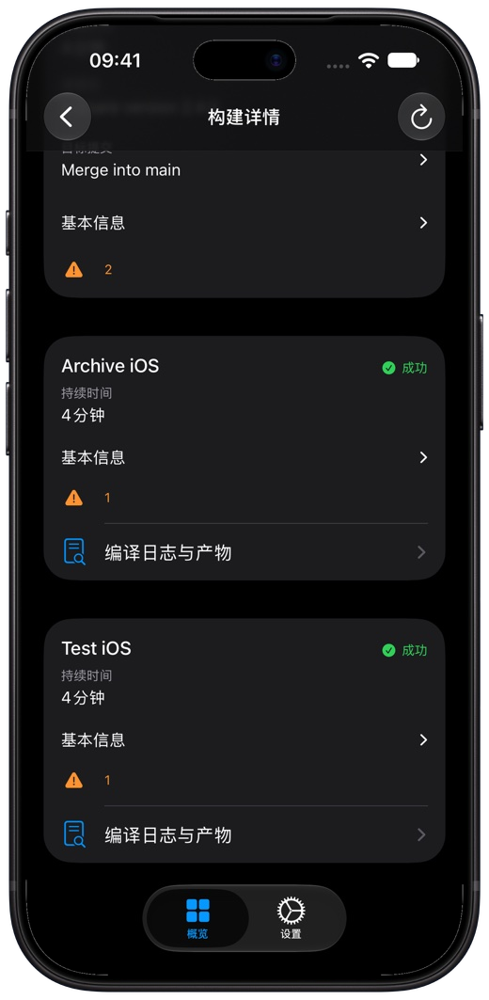

版本与构建
查看处理和测试状态，选择构建，管理审核资料。关键进度清晰可见。
围绕高频工作组织信息。从最新构建，到正在使用它的测试人员，顺着发布进度继续操作。
查看处理和测试状态，选择构建，管理审核资料。关键进度清晰可见。
管理测试组与邀请，查看截图和崩溃反馈，继续推进下一轮测试。
在当前页面切换语言，编辑 App、版本，以及 API 支持的内购和订阅资料。

XCODE CLOUD
打开工作流，查看构建记录与每个执行步骤。直接在手机上阅读编译日志，预览或分享可下载的产物。
可用操作受 Apple API、密钥权限及资源当前状态限制。
使用 App Store Connect API 密钥连接账号。Atlas 在设备上签名请求并直接连接 Apple，账号数据保存在本地加密数据库中。
免费版支持一个开发者账号。Atlas Premium 支持管理更多账号，提供月付和年付方案。价格与续订条款在购买前展示。
需要 App Store Connect API 密钥，以及相应的 App 访问权限。在 Atlas 中导入密钥即可连接；可用操作取决于密钥的角色和 App 访问范围。
Apple API、资源状态与密钥权限都可能限制操作。请核对资源当前状态和密钥的访问范围。如果结果不符合预期，请提供页面错误和复现步骤，不要发送私钥。
使用购买时的 Apple 账号，在 Atlas Premium 页面选择恢复购买。管理或取消订阅，请前往 iOS 设置 → Apple 账号 → 订阅。
请提供 Atlas 版本和构建号、设备型号、系统版本、复现步骤及页面错误。上传前移除 API 密钥、令牌、个人信息和私有 App 数据。